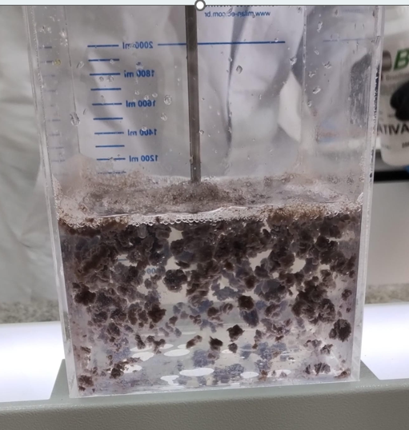

Essa postagem do Química Programada tem como objetivo fazer uma apresentação de um teste prático de coagulação e floculação para enquadramento
de um efluente com resíduos da indústria farmacêutica para descarte e, posteriormente, para reúso. Esse material foi obtido durante a participação do
Química Programa do "Curso Prático de Tratamento de Água para Reúso" na ABQ-RS.
Na Figura 1 é apresentado do efluente a ser tratado, oriundo de uma indústria farmacêutica. No centro é apresentado o efluente
depois de tratado com coagulante e floculante, enquadrado para descarte. Na imagem mais à direita é apresentado o mesmo efluente, após ser tratado
com coagulante, floculante, carvão ativado e ter sido filtrado em um leito uma resina mista.
O reúso da água potável na indústria é uma estratégia essencial para promover a sustentabilidade hídrica e reduzir os impactos ambientais das atividades
produtivas. A escassez crescente de recursos hídricos, aliada ao aumento da demanda por água nos processos industriais, torna o reaproveitamento uma prática
cada vez mais necessária.
Do ponto de vista técnico, o reúso permite:
Redução do consumo de água potável: minimiza a dependência de fontes naturais, preservando aquíferos e mananciais.
Eficiência operacional: processos como resfriamento, lavagem e geração de vapor podem utilizar água reciclada sem comprometer a qualidade final do produto.
Diminuição de custos: menores gastos com captação, tratamento e descarte de efluentes.
Conformidade ambiental: atende às exigências legais e melhora a imagem da empresa perante órgãos reguladores e sociedade.
Além disso, tecnologias de tratamento como filtração, osmose reversa e sistemas de membranas tornam possível adaptar a água reutilizada às exigências específicas
de cada processo industrial.
Figura 1. Efluente farmacêutico para enquadramento.
2. Tratamento de efluente para descarte
Parâmetros do Efluente a ser tratado
O efluente a ser tratado apresentava os seguintes parâmetros :
Turbidez : 276 NTU
Condutividade : 2160 uS/cm
STD : 1135 mg/L
pH : 5,32
Cor : 3400 PtCo (Hz)
Dosagem de Coagulante e Floculante
O efluente a ser tratado, antes de injeção do coagulante e floculante, teve seu pH ajustado para valor próximo a 7 com uso
de uma solução de soda.
Dosagem de 60-300 ppm do coagulante PAC (policloreto de alumínio) da BWE( Brazilian Wattle Extracts).
Dosagem polímero floculante da BWE (Brazilian Wattle Extracts) entre 1 a 2 mL para cada litro de efluente.
Agitação de 200 rpm durante a injeção do coagulante, permanecendo por cerca de 3 minutos.
Agitação de 50 rpm durante a injeção do floculante, permanecendo sob baixa agitação durante 10 minutos.
Efluente tratado permaneceu em repouso para que ocorresse decantação de todos os flocos e pudessse ser feita coleta do
clarificado para análise.
Resultados obtidos :
Turbidez : 4-6 NTU
Condutividade : 2420 mS/cm
STD : mg/L
pH : 7,15
Cor : 321 PtCo (Hz)
Abaixo segue um vídeo da coagulação e floculação do efluente tratado.
Video da coagulação e floculação de efluente farmacêutico.
3. Tratamento de efluente para reúso
Como pode ser visto na Figura 1 é possível enquandrar para descarte o efluente em questão, porém não é possível,
apenas com coagulante e floculante, enquadrá-lo para reúso. Para tanto, é necessário um tratamento mais específico para
enquadrar cor, turbidez e condutividade. Para enquadar esses parâmetros para reúso foi utilizando 500 ppm de carvão ativado, juntamente com
o coagulante e o floculante e, posteriormente, o efluente foi filtrado num leito de resina mista.
Dosagem de Coagulante, Floculante e Carvão Ativado
O efluente a ser tratado, antes de injeção do coagulante e floculante, teve seu pH ajustado para valor próximo a 7 com uso
de uma solução de soda.
Dosagem de coagulante PAC (policloreto de alumínio) da BWE (Brazilian Wattle Extracts) entre 300 a 600 ppm.
Dosagem de 500 ppm de carvão ativado.
Dosagem de Polímero floculante da BWE (Brazilian Wattle Extracts) entre 3 a 5 mL para cada litro de efluente.
Agitação de 200 rpm durante a injeção do coagulante e carvão ativado, permanecendo por cerca de 3 minutos.
Agitação de 50 rpm durante a injeção do floculante, permanecendo sob baixa agitação durante 10 minutos.
Efluente tratado permaneceu em repouso para que ocorresse decantação de todos os flocos e pudesse ser feita coleta do
clarificado para análise.
Abaixo segue um vídeo da coagulação e floculação do efluente tratado juntamente com carvão ativado.
Video da coagulação e floculação de efluente farmacêutico com carvão ativado. Figura 2. Efluente farmacêutico percolado na resina mista.
Após o tratamento com carvão ativado, pode-se ver que o parâmetro cor está bem mais adequado, com o clarificado quase
completamente transparente. Em algumas aplicações de reúso de água, pode ser necessário reduzir ainda mais a turbidez e a condutividade.
Para esses casos, recomenda-se filtrar o efluente num leito de resina mista, conforme Figura 2.
Após o tratamento com resina mista é possível obter, para o efluente em questão, para os parâmentros de qualidade da
ordem dos valores listado abaixo:
Resultados obtidos :
Turbidez : 0,78 NTU
Condutividade : 100 uS/cm
STD : 50 mg/L
pH : 7,15
Cor : 1 PtCo (Hz)
4. Outros testes realizados
Tratamento com Cloreto férrico e Polímero floculante :
Durante a prática foram realizados outros testes. Um tratamento que resultou num clarificado bastante transparente, mesmo sem o uso de
carvão ativado ou resina foi a dosagem descrita abaixo:
Coagulante VETA ORGANIC da BWE (Brazilian Wattle Extracts): 3000 ppm.
Polímero floculante da BWE (Brazilian Wattle Extracts) : 1 ppm.

Figura 3. Tratamento com cloreto férrico e polímeros.
Tratamento com coagulante orgânico VETA ORGANIC da BWE (Brazilian Wattle Extracts) :
Foi realizado tratamento do efluentes apenas com o coagulante VETA ORGANIC da BWE (Brazilian Wattle Extracts) demonstrando capacidade de
atuar como coagulante e como floculante.
No vídeo abaixo, temos o mesmo efluente sendo tratado com coagulante PAC e polímero na esquerda e com apenas o VETA Organic na direita (com dosagns mais elevadas)
e em ambos os casos observa-se a formação de flocos e início de clarificação do efluente.
Video da coagulação e floculação de efluente farmacêutico.
5. Referências
"Curso Prático de Tratamento de Água para Reúso" na ABQ-RS.
Curso Online : "Remoção de Nitrogênio e Fósforo em ETEs." Mario Marmo Farias Peirano e Waltair Tessler. Senge/RS.
Curso Online : "Crie um site simples usando HTML, CSS e Javascript". Fundação Bradesco.
Curso online : "HTML e CSS". Eucurso, Alfamídia.
Curso Online: "Fundamentos de Programação." PUC-RS
Curso Online: "Fundamentos de Orientação a Objetos." PUC-RS
Assistente de IA da Microsoft Pilot.
Assistente de IA do ChatGPT.
Imagem gerada a partir de fotos do desenvolvedor do site modificadas com o Copilot e ChatGPT.